Brouilly 2008

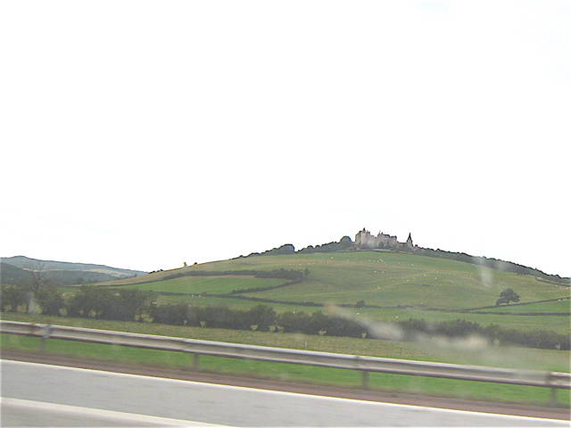
Brouilly, c'est dans le Beaujolais, tout le monde sait ça, et le festival est sur le haut du Mont Brouilly dont les pentes engendrent les Côtes de Brouilly... Donc, autoroute et en avant !

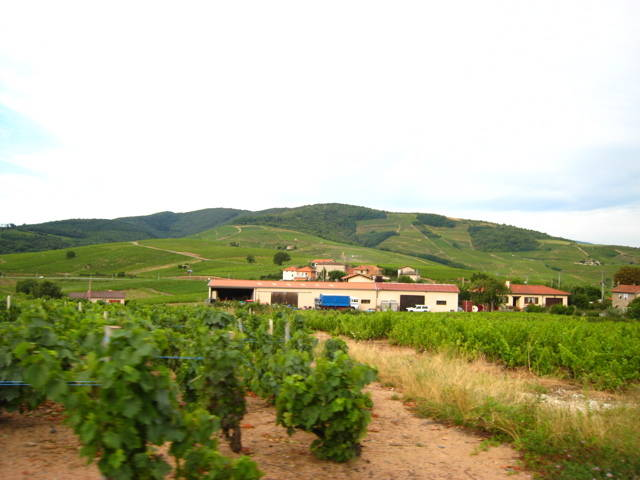
Sur le haut du Mont, des bois, mais plus bas, des vignes, des vignes, des vignes !

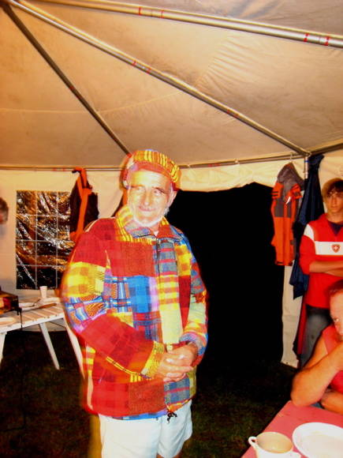
J'arrive vers 22h, personne n'est couché et il reste de la cancoillotte... Gaby étrenne le bel ensemble en polaire offert par les cervolistes pour son anniversaire...

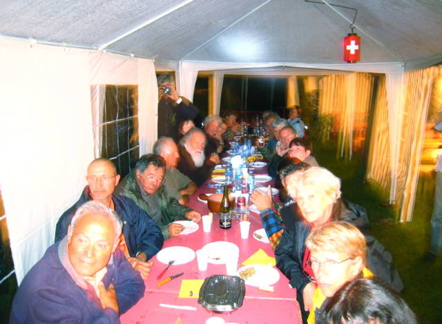
Tout le monde est encore à table, et les Suisses sous la bannière de Bernard Clerc ajoutent de la raclette au menu...

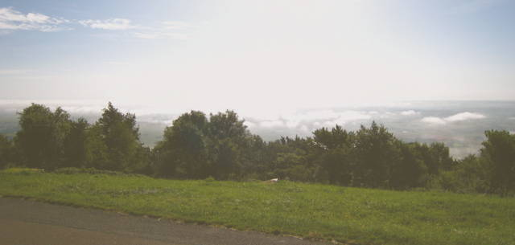
Au matin, brumes matinales dans la vallée, il paraît qu'il est tombé une grosse averse hier soir...

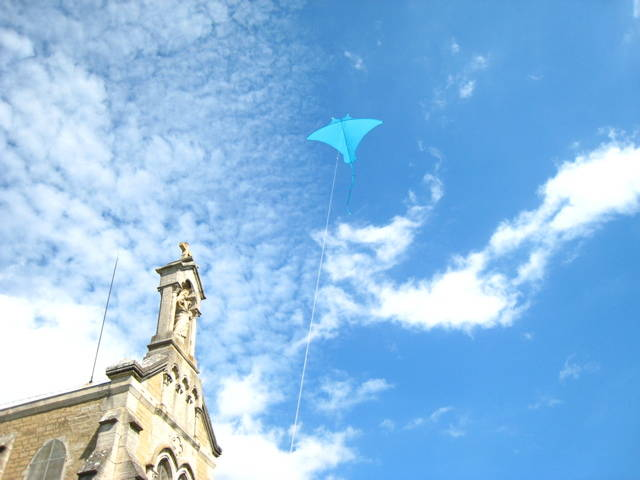
Il semble que ce soit tout ou rien, ici : une année, les CVs vous arrachent les mains, la suivante, on cherche au doigt mouillé la direction du vent, qui change tout le temps d'ailleurs...

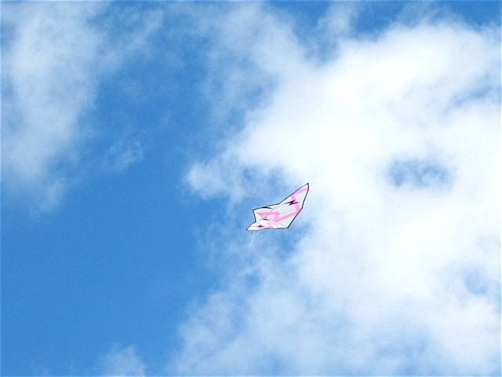
Un nouveau Jessica 14 promet les éclairs et la foudre...

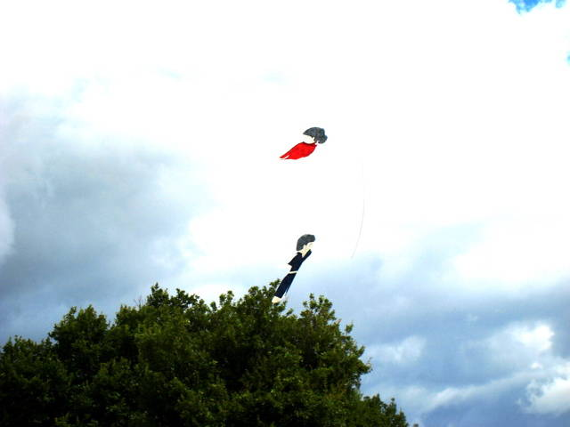
Michel Sollin fait voler en mobile un couple de jeunes ados. Construction ultra-light, en papier de soie et poils de balais refendus en quatre !

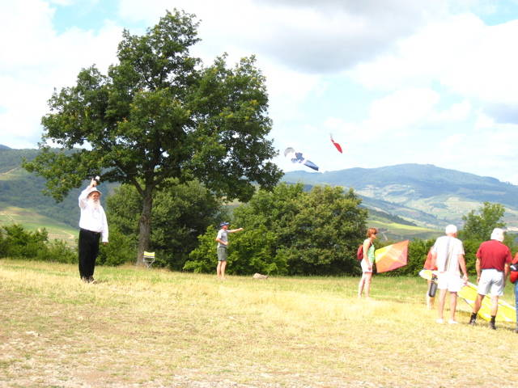
Michel, le voilà, sur le grand terrain assez pentu et entouré d'arbres... mais avec de très belles vues sur les monts avoisinants et leurs vignes...

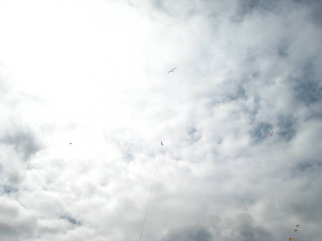
Le vent monte un peu au-dessus de Force 1, je sors mon Goéland, on voit monter des Jessicas, un début du train léger de Georges...

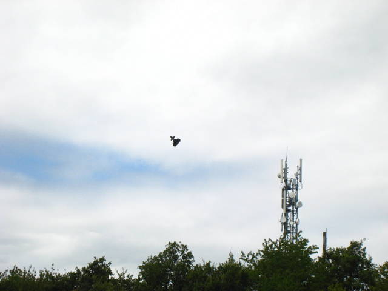
Le vent retombe (pas de bien haut !). Un fana sort une maquette télécommandée et futuriste !

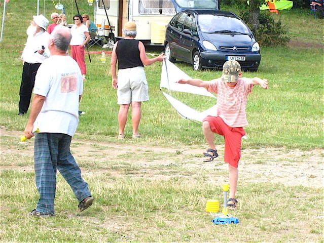
Jacky monte sa fusée à air comprimé qui part quand on saute sur le soufflet ! Ca amuse les petits enfants, mais aussi pas mal de grands qui essayent de battre le record d'altitude...

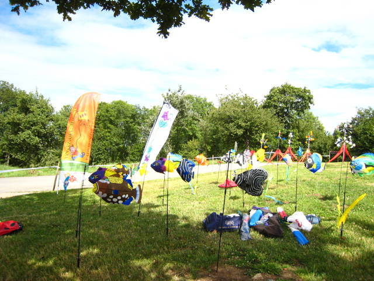
Quelques JdVs ont été aussi plantés (dans le caillou, c'est ingrat !) : les poissons suisses, les CDs de François et quelques autres...

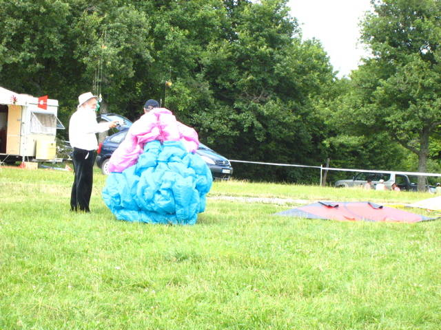
Michel Sollin parle à un cerveau, en tout cas, ça y ressemble, même si ce n'est que Jacky qui a replié sommairement son paraplane après ses infructueux efforts de déploiement !

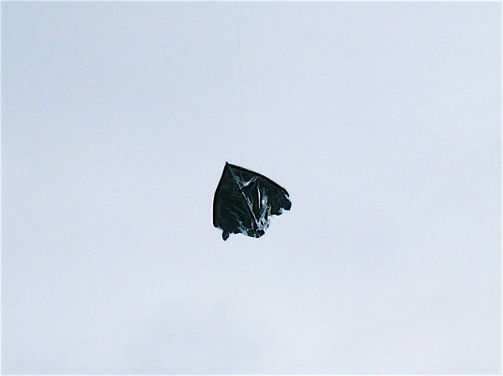
Pour s'occuper, Jean-Claude Veillerobe construit un CV adapté, avec une couverture de survie en mylar et des ballons-saucisses d'enfants, bien gonflés !

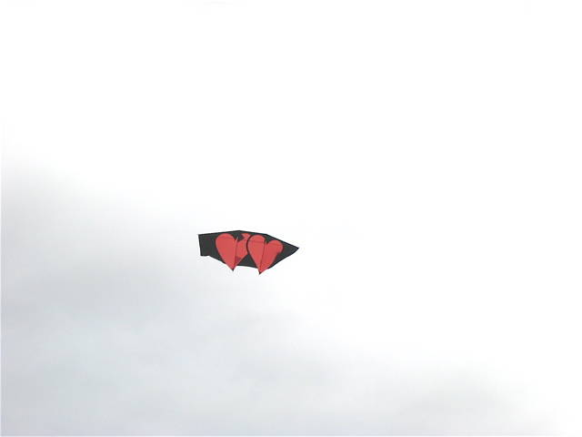
Les Fagas ont bien volé comme ces coeurs jumeaux, avec le problème habituel des Fagas dont les quilles brouillent le dessin...

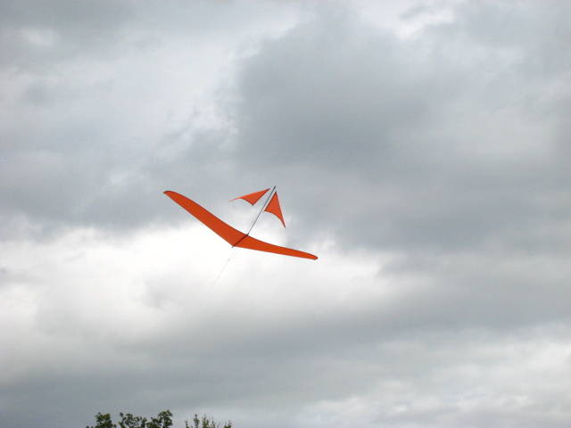
Nouveau, ce joli oiseau en formule canard, élaboré sans doute sur des scions de canne à pêche...

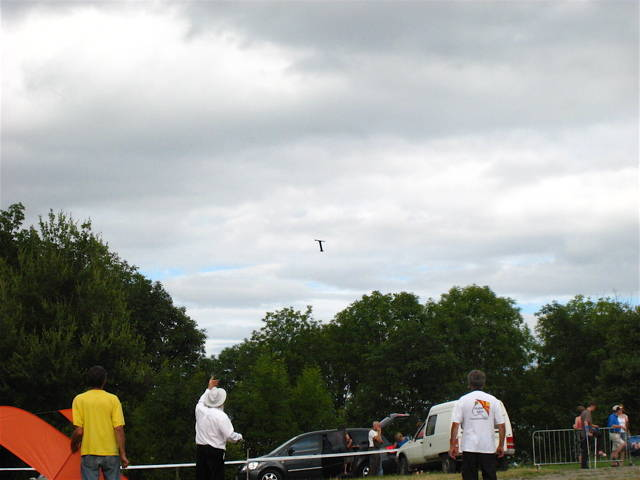
Michel a encore fait voler un cerf-volant en T, minimal...

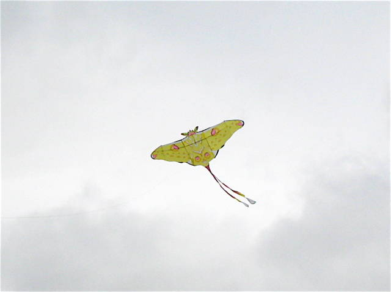
Ce beau papillon jaune de belle surface a pu rester en l'air aussi quelque temps !

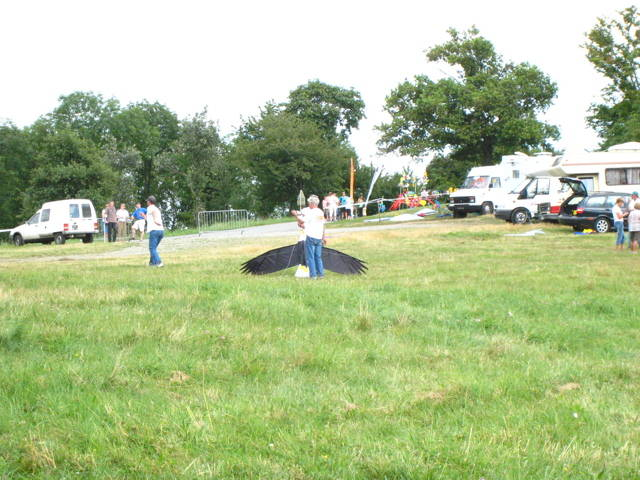
Et Jean-Claude Mariette a monté pour le faire voir son aigle pêcheur, mais il est construit pour durer, pas pour la pétole !

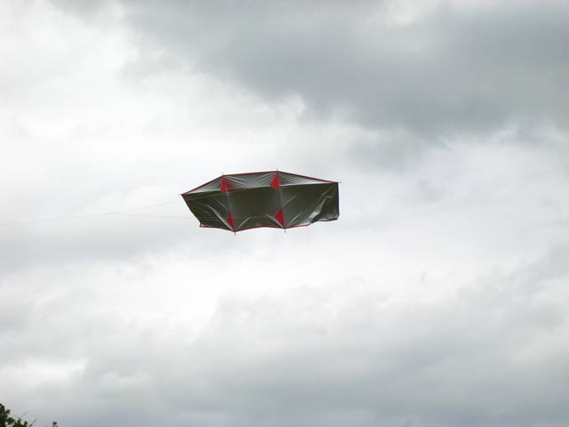
Jean-Pierre Schaeffer a pu lancer aussi son Faga en spi métallisé ! Il est un peu sombre par manque de transparence en vol de jour, mais renvoie bien la lumière en vol de nuit.

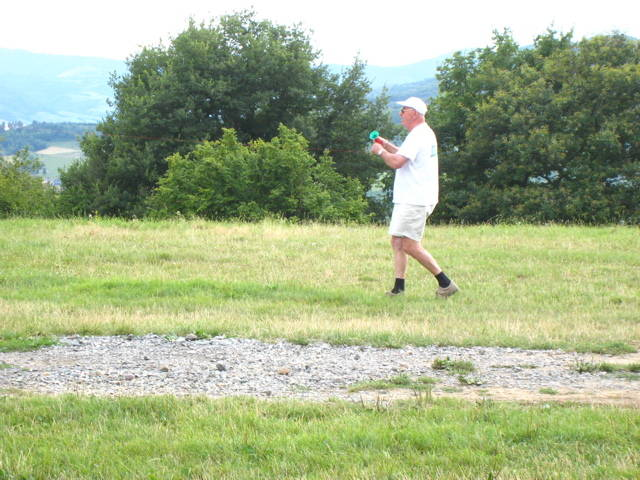
Mr Orsenigo a fait voler avec un succès... moyen le cerf-volant rectangulaire à armature en T de l'atelier de la fête du CVCF à Vaux-Le-Pénil. Il lui faudrait un vent un peu plus soutenu qu'ici....

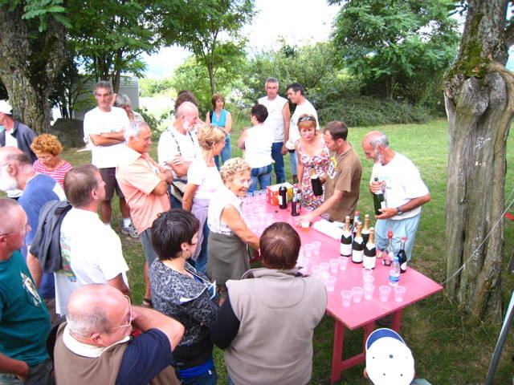
Au soir, petit apéritif au Côtes de Brouilly blanc mousseux ! Très bon pour les Kirs !

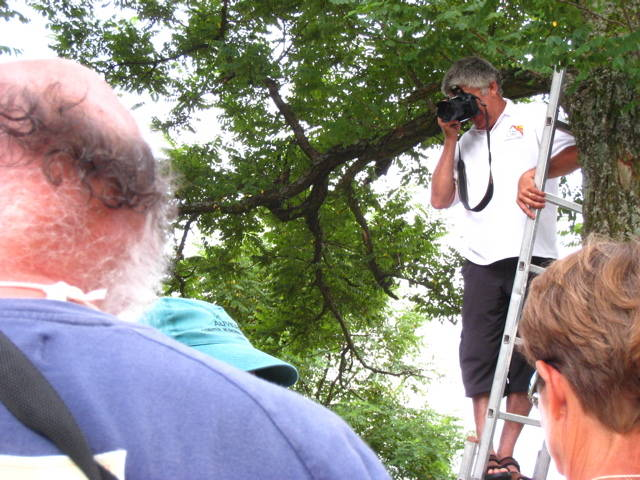
Jean-Pierre aime bien se percher. Il me sortira mon oiseau des branches, et utilise la même échelle pour des photos semi-aériennes...

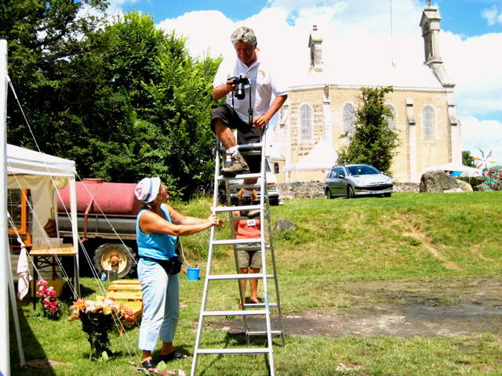
Il s'apprête aussi à prendre le dîner à sa manière, étayé par Mireille, la fille de Gaby, et la dévouée, active et souriante organisatrice de tout le bazar...

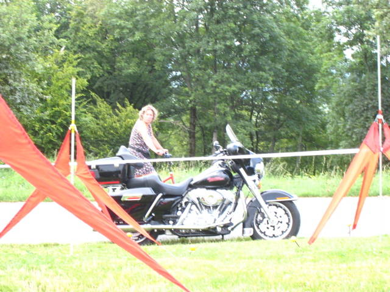
Voici d'ailleurs Mireille qui chevauche sa splendide moto...

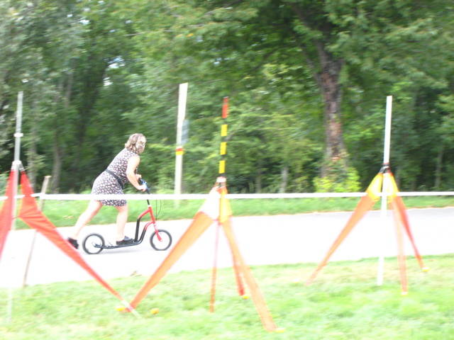
Et qui continue sur son véhicule écologique...

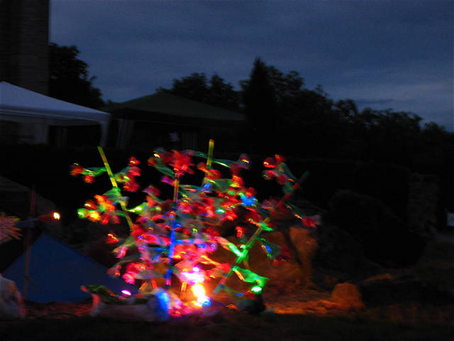
Au soir, Néné nous agrémente le dîner de ses cactus de plus en plus éclairés !

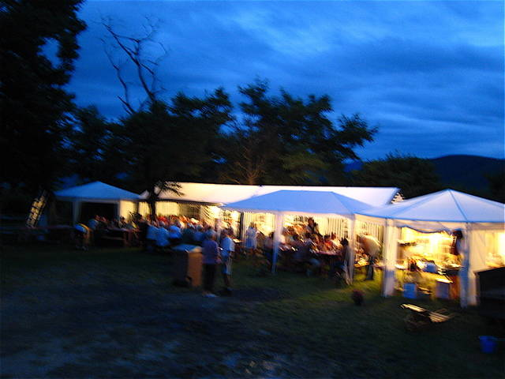
Et puis les barnums s'illuminent et abritent les cervolistes du serein humide !

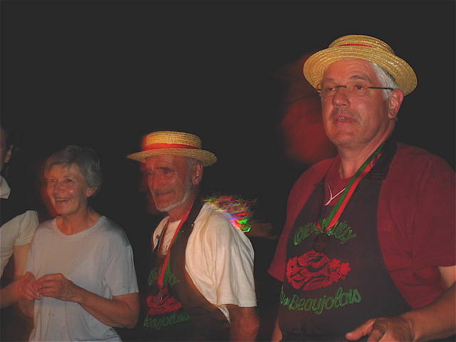
Les intronisés à la confrérie de Brouilly il y a deux ans se mettent en tenue (sauf François qui n'est pas présent) !

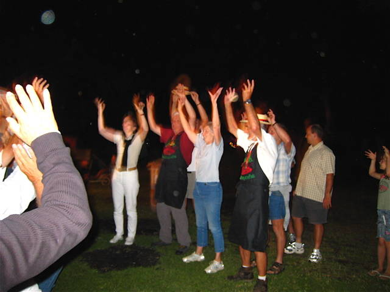
Et ils chantent la chanson des vignerons des Côtes, avec les gestes appropriés...

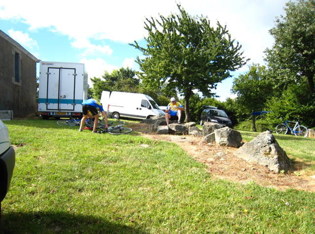
Dans la fraîcheur matinale, des cyclistes ont courageusement escaladé le Mont, sans EPO, sans rien, et à un âge où on aurait plutôt tendance à regarder le Tour à la télé.

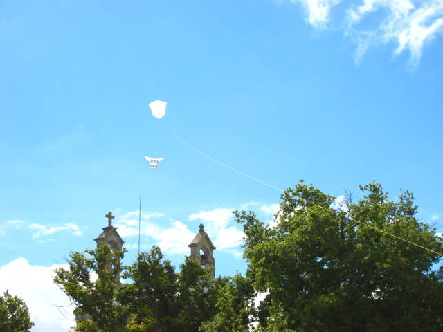
Le vent est un peu plus soutenu ce matin, mais retombera l'après-midi. Je tente un coup de Grue, mais trop tard, je devrai me rabattre sur le Goéland puis Manta !

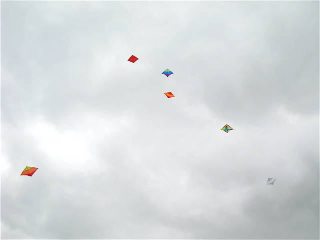
Ces cerfs-volants ne volent pas mal : ce sont des espèces de deltas légers mais bien tendus et bien voilés qui peuvent voler comme des combattants, ou en statiques si on ne les secoue pas et que le vent est suffisant !

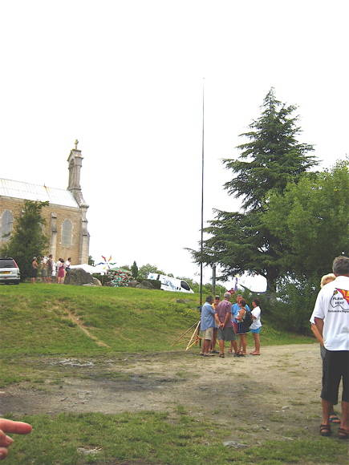
Faute de vent, on expose des matériels et des CVs un peu partout. Jean-Claude a réparé son immense mât de photo doté maintenant un ascenseur électrique !

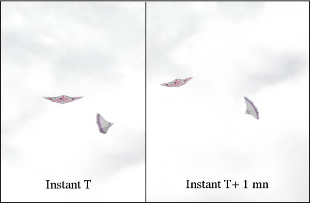
Non seulement le vent est faible, mais il tourbillonne autour du Mont. Ces Jessicas se maintiennent bien en l'air, mais il ne faut pas relâcher la surveillance...

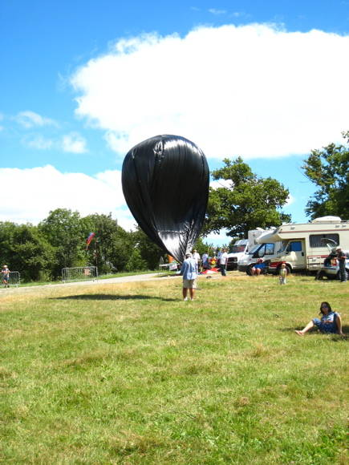
Devant le soleil et le manque de vent, les ballons solaires sortent... Celui de François Guzman dont la déco est minimaliste...

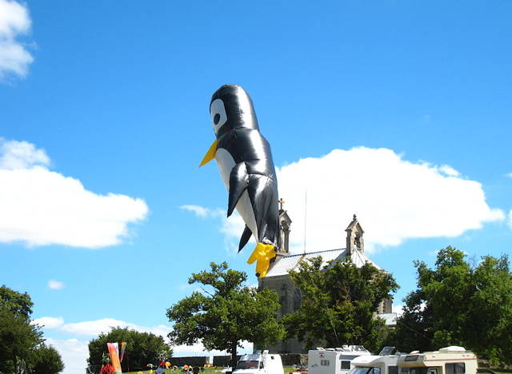
Et l'immense pingouin de Joël qui fera des sauts de puce en fonction des risées !

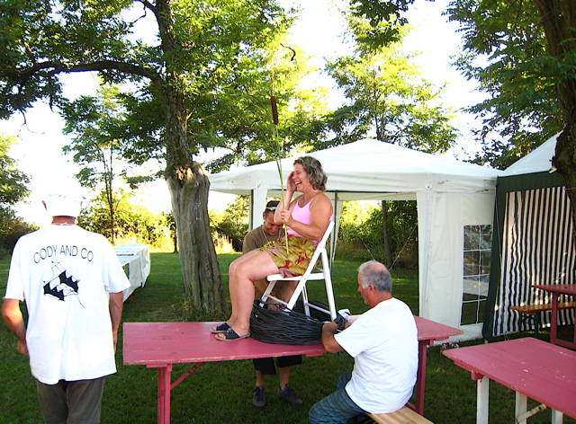
C'est fini, on range. Mireille donne encore un petit coup de main (si on peut dire) pour enrouler le gros câble électrique autour d'une chaise !

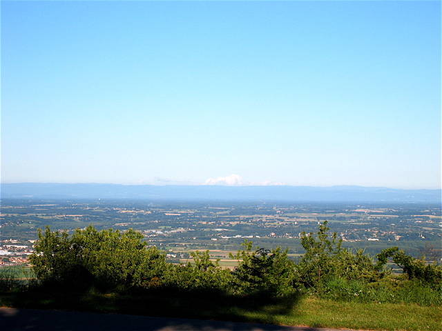
Avec le vent calme, pas de poussière soulevée aujourd'hui, et l'atmosphère est pure : Du Mont-Brouilly, on voit le Mont-Blanc à l'horizon à l'oeil nu sans problème !

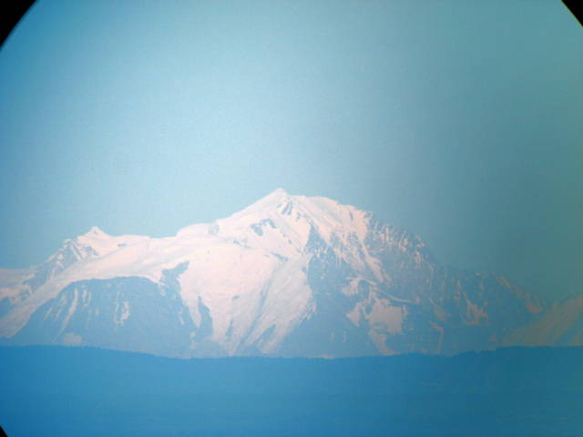
Et Jean-Pierre a amené sa lunette d'observation qui permet de voir le contenu des sandwiches emportés par les cordées ! Evidemment, à la photo improvisée par l'oculaire, on perd de la netteté...

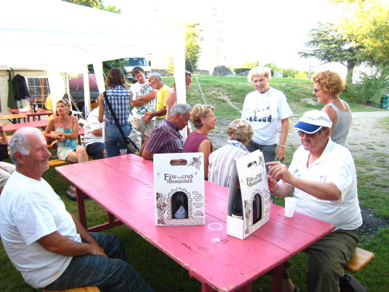
Après le dîner d'adieu, les vignerons nous ont offert quelques lots de Côtes de Brouilly pour les plus méritants... de ceux qui étaient restés !

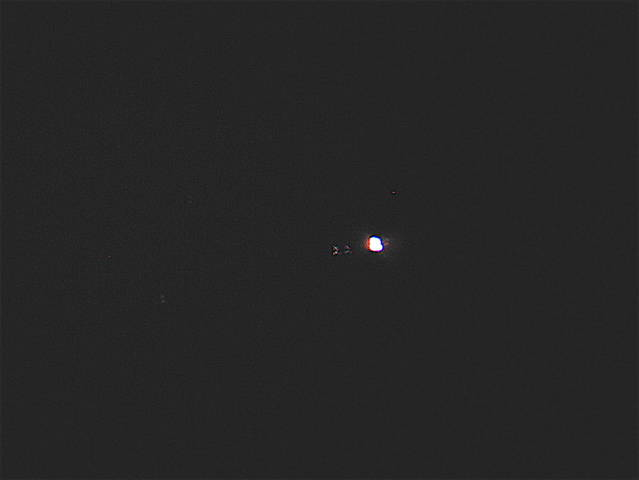
Ensuite, Jean-Claude Mariette qui s'y connaît nous a montré, grâce à la lunette de Jean-Pierre, Jupiter et ses lunes (on en voyait 6 dans l'appareil, mais le montage photo est très approximatif et on en perd)...

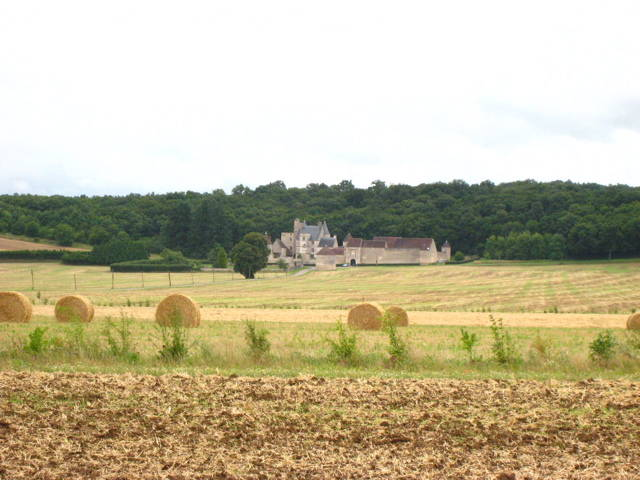
Le lundi, je suis passé voir un vieux copain dans l'Yonne. Il m'a montré son coin avec de beaux paysages, le château de Faulin...

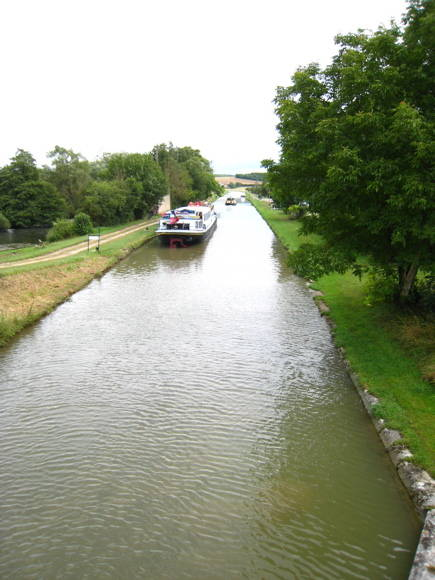
Le canal parallèle à l'Yonne avec pas mal de bateaux de croisière...

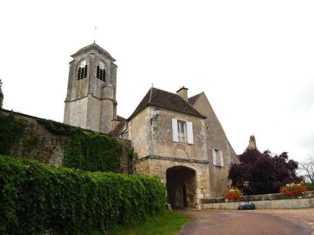
Le bourg de Coulanges avec la porte de l'enceinte fortifiée et une église solide !

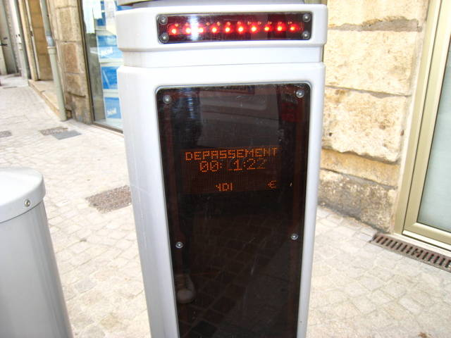
Arrêt à Clamecy, où il ne fait pas bon s'éterniser sur les places de parking (les bornes automatiques indiquent : Dépassement de 1 mn 22, Amende 11 Euros, Police appelée)...

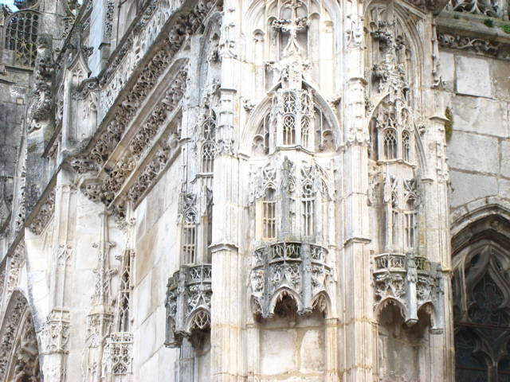
Mais la Collégiale est très belle avec une véritable dentelle de pierre comme on le dit généralement... mais là, c'est vrai !

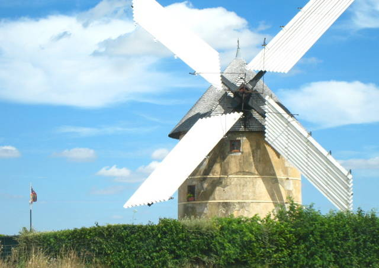
Et puis retour à la maison, passage devant un moulin avec le même mécanisme que le Moulin du Cotentin, pas bien beau mais pratique...
Brouilly : Un vent toujours difficile sur la colline. Mais, entre les vignerons, Gaby et Mireille, une ambiance toujours généreuse et sympathique... Et un site magnifique. A nous d'avoir les bons cerfs-volants !